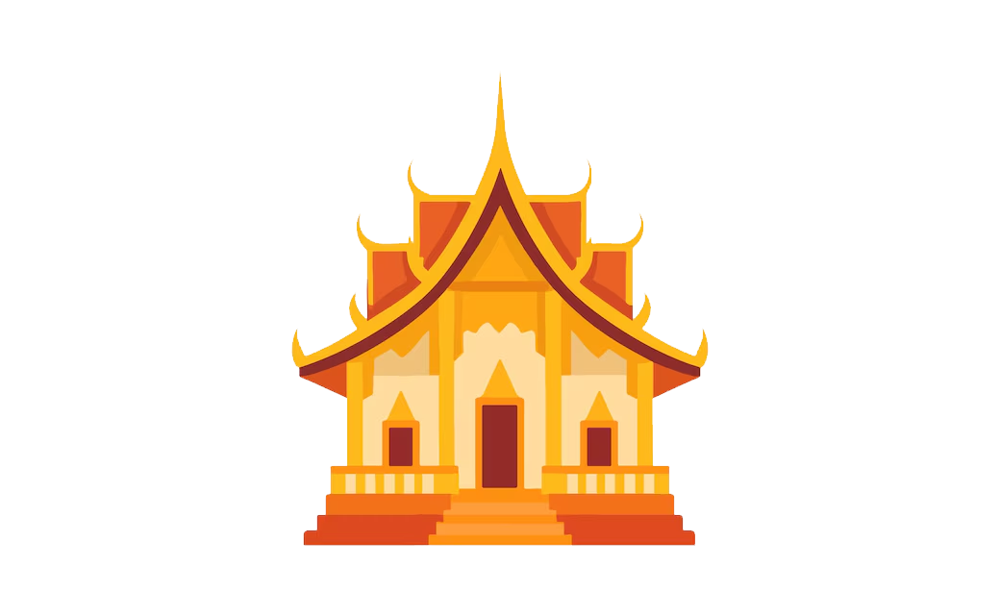
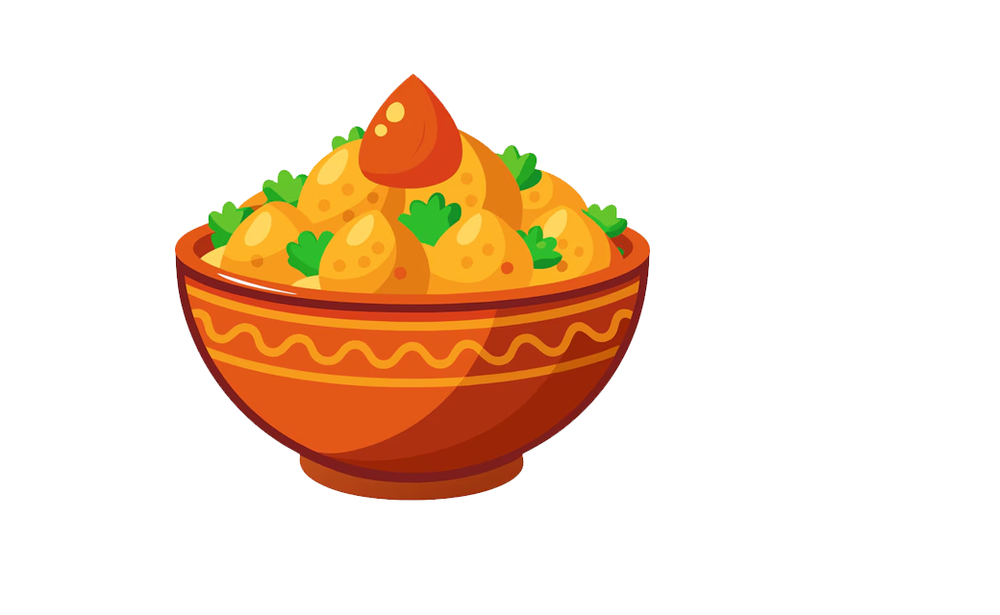
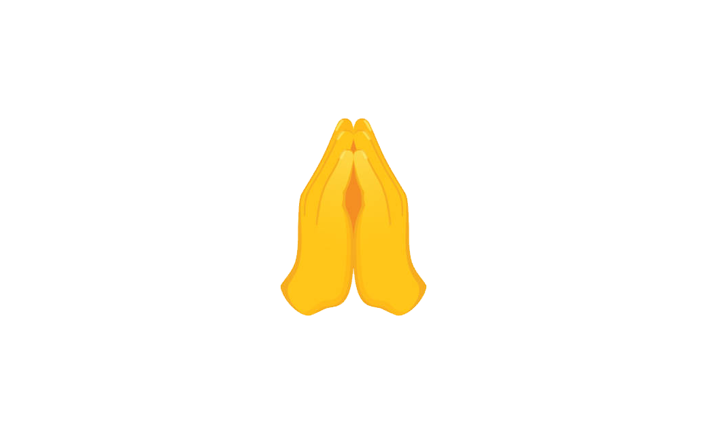
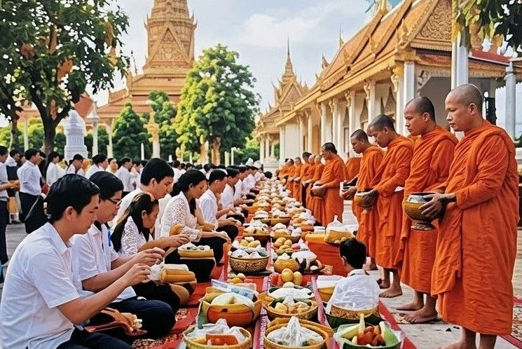

Activities During Pchum Ben Day
During Pchum Ben, Cambodian people participate in many traditional activities.

Visit the Pagoda
People go to the pagoda to make offerings and pray.

Offer Food to Monks
Food, fruits, flowers, and other items are prepared to offer to the monks.

Pray for Ancestors
People pray for the souls of their ancestors and wish them a better next life.
Spend Time with Family
Families gather together and participate in the festival.

People offering food to the monks during Pchum Ben Day.